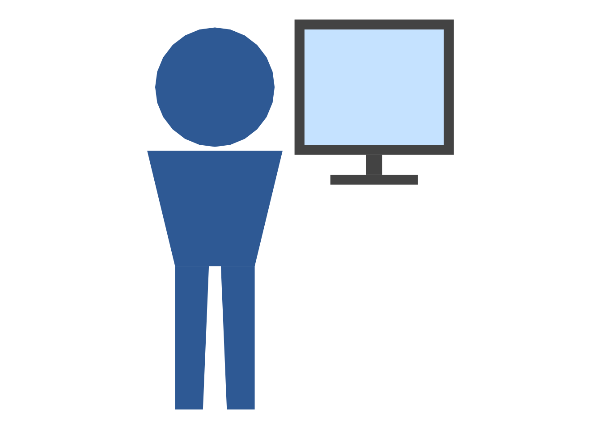
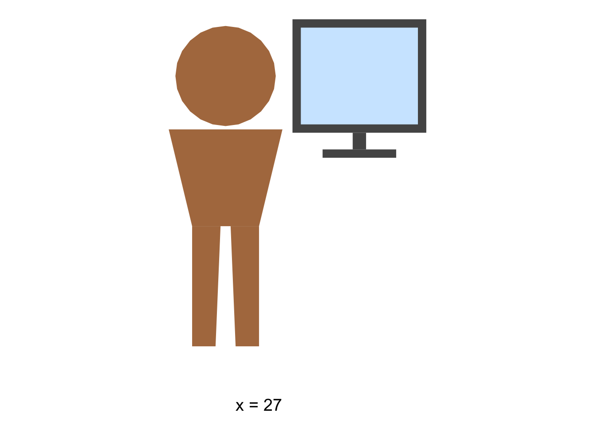
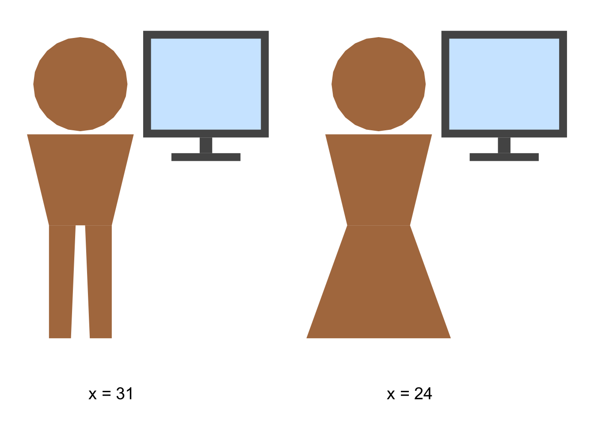
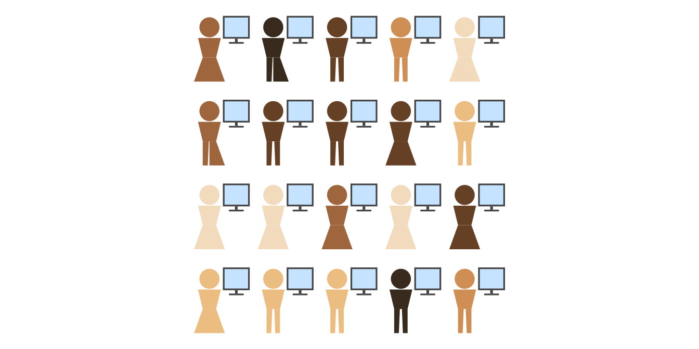
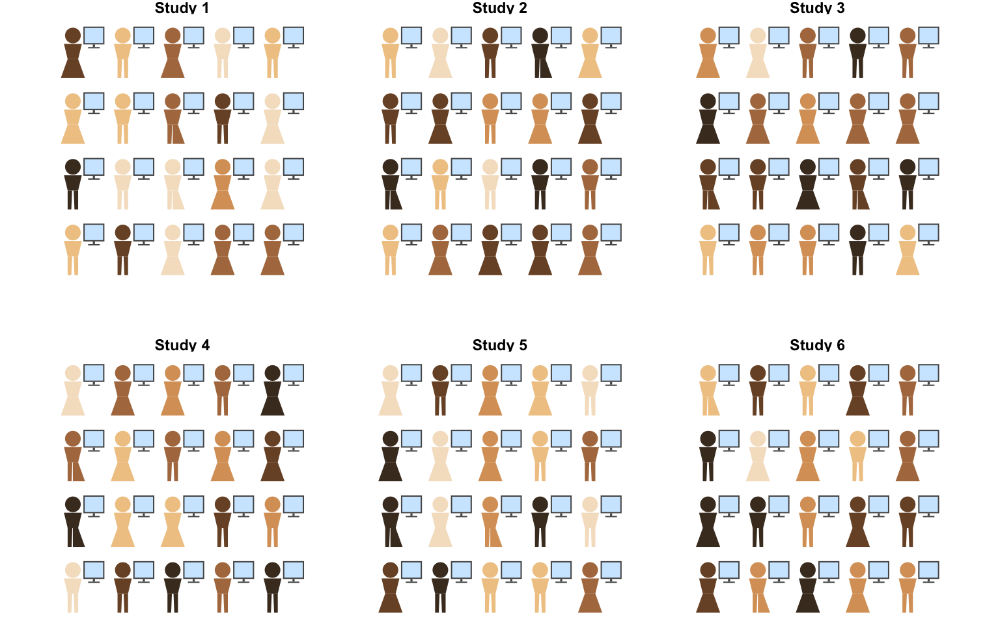

source("person-grid.R")
source("testing-sequence.R")testing-sequence.R: one person, two people, a sample — at a computer
Walkthrough: how the script works, and how to use it in Quarto
Aims
testing-sequence.R extends the pictogram generator in person-grid.R with a “person sitting at a computer” composite icon, and uses it to draw the narrative sequence: one person doing a data-collection task → two people doing it → a whole sample of people doing it (shown as a grid, with no individual scores). It also provides a faceted “grid of grids” version for showing several independent studies, each with its own sample of people. Paired with sampling-distributions.R’s synthetic score figures, this is the icon half of a two-track illustration of sampling and measurement error.
After working through it, you should be able to:
- explain how
person_at_computer()composes two independent polygon sets (person, monitor) into one icon, rather than drawing a new icon style; - generate the one-person/two-person/sample sequence with your own scores;
- build a faceted grid of independent “studies” with
testing_icons_studies().
Prerequisites / assumptions
- Packages:
ggplot2only. - Sourcing:
person-grid.Rmust be sourced first — this script reusesperson_parts(),sample_counts(), anddiverging_colors()from it directly (not via a package namespace, so order matters). - Reader background: read person-grid-walkthrough.qmd first if the underlying icon mechanics (geometry, composition sampling, colour modes) aren’t already familiar — this document assumes them.
How it works: the process
flowchart LR
A["person_parts()\n(from person-grid.R)"] --> C["person_at_computer()\n(person + monitor, one role column)"]
B["monitor_parts()\n(screen geometry,\npositioned relative to the head)"] --> C
C --> D["testing_icons()\nloop over n icons,\nplace in a grid,\noptional score labels"]
D --> E["testing_icons_studies()\nrepeat testing_icons() per study,\nfacet_wrap(~study)"]
The key idea is composition over inheritance: rather than writing a new icon from scratch, monitor_parts() draws just the screen/stand, and person_at_computer() glues one person_parts() output and one monitor_parts() output into a single polygon set, tagged with a role column ("person" vs "monitor") so the two pieces can be filled differently. Everything above that (grids, score labels, faceted studies) is built the same way person_grid() was.
Element-by-element walkthrough
Screen geometry: monitor_parts()
monitor_parts <- function(scale = 1, ox = 0, oy = 0,
center_y = 1.62, x_offset = 0.80) {
bezel_hw <- 0.40; bezel_hh <- 0.34; inset <- 0.05
neck_h <- 0.10; neck_hw <- 0.04; base_hw <- 0.22; base_h <- 0.05
bezel_top <- center_y + bezel_hh
bezel_bottom <- center_y - bezel_hh
neck_top <- bezel_bottom
neck_bottom <- neck_top - neck_h
base_top <- neck_bottom
base_bottom <- base_top - base_h
parts <- list(
bezel = data.frame(x = x_offset + c(-bezel_hw, bezel_hw, bezel_hw, -bezel_hw),
y = c(bezel_top, bezel_top, bezel_bottom, bezel_bottom)),
screen = data.frame(x = x_offset + c(-bezel_hw + inset, bezel_hw - inset,
bezel_hw - inset, -bezel_hw + inset),
y = c(bezel_top - inset, bezel_top - inset,
bezel_bottom + inset, bezel_bottom + inset)),
neck = data.frame(x = x_offset + c(-neck_hw, neck_hw, neck_hw, -neck_hw),
y = c(neck_top, neck_top, neck_bottom, neck_bottom)),
base = data.frame(x = x_offset + c(-base_hw, base_hw, base_hw, -base_hw),
y = c(base_top, base_top, base_bottom, base_bottom))
)
# ... offset by (ox, oy) and scale, same as person_parts() ...
}This draws four stacked polygons (bezel, inset screen, neck, base — an inverted-T stand) in the same local coordinate frame person_parts() uses (head centred at x = 0, y = 1.62), with every y-coordinate chained off the previous one (neck_top <- bezel_bottom, etc.) so the stand always sits flush under the screen regardless of bezel size.
NoteWhy center_y and x_offset, specifically?
center_y = 1.62 vertically centres the monitor on the head, not on the whole body, so the composite reads as “looking at a screen” rather than “a person standing next to an unrelated box”. x_offset = 0.80 is a fixed horizontal gap from the body’s centre line — both defaults exist specifically to make the pairing legible, not just to place a monitor somewhere on the canvas.
ggplot(monitor_parts(), aes(x, y, group = part)) +
geom_polygon(fill = "grey70") +
coord_equal() +
theme_void()The composite icon: person_at_computer()
person_at_computer <- function(kind = "A", age = "adult", disabled = FALSE,
scale = 1, ox = 0, oy = 0,
person_color = "#3B6EA5",
screen_color = "#CFE8FF",
frame_color = "#555555") {
p <- person_parts(kind, age, disabled, scale, ox, oy)
p$role <- "person"
p$fill <- person_color
m <- monitor_parts(scale = scale, ox = ox, oy = oy)
m$role <- "monitor"
m$fill <- ifelse(m$part == "screen", screen_color, frame_color)
rbind(p, m)
}This simply calls person_parts() and monitor_parts() with the same scale/ox/oy, stamps a fill colour on each (the monitor’s bezel/neck/ base all get frame_color, only the inset screen part gets screen_color), and row-binds the two polygon sets. Because both pieces share the same offset, the composite moves as one unit when placed in a grid later.
one_icon <- person_at_computer(kind = "A")
ggplot(one_icon, aes(x, y, group = paste(part, role), fill = fill)) +
geom_polygon() +
scale_fill_identity() +
coord_equal() +
theme_void()
The main sequence function: testing_icons()
This mirrors person_grid()’s structure closely (composition sampling, colour modes, grid placement), with two differences specific to the narrative sequence it’s built for:
- an optional
scoresargument: when supplied (length must equaln), each icon gets an"x = <score>"label underneath it — used for the one-person and two-person steps. LeftNULLfor the “sample” step, where the narrative says scores exist but deliberately doesn’t show them. - it inherits
person_grid()’s two colour modes ("diversity"/"value") unchanged, so the same colour-by-effect-size trick is available here too, not just on plain person icons.
testing_icons(n = 1, scores = 27)$plot
testing_icons(n = 2, scores = c(31, 24))$plot
testing_icons(n = 20, seed = 7)$plot
Many studies at once: testing_icons_studies()
testing_icons_studies <- function(n_studies, n_per_study, ncol = NULL,
seed = 1, ...) {
panels <- vector("list", n_studies)
for (s in seq_len(n_studies)) {
g <- testing_icons(n = n_per_study, seed = seed + s, ...)
g$data$study <- paste("Study", s)
panels[[s]] <- g$data
}
df <- do.call(rbind, panels)
df$poly_id <- paste(df$study, df$poly_id)
# ... ggplot() + facet_wrap(~study) ...
}This is the icon analogue of sampling-distributions.R’s plot_histogram_grid()/plot_dotpile_grid(): it calls testing_icons() once per “study” with an offset seed (seed + s), so each panel is an independently drawn sample (not the same 20 icons repeated), tags each panel’s polygons with a study column, and facets.
NoteWhy re-prefix poly_id with study?
Without df$poly_id <- paste(df$study, df$poly_id), icon 1 in Study 1 and icon 1 in Study 2 would share the same poly_id, and ggplot’s group aesthetic would try to connect/group their polygons together across facet panels — a subtle bug that wouldn’t throw an error, just quietly distort the shapes.
testing_icons_studies(n_studies = 6, n_per_study = 20, ncol = 3, seed = 104)$plot
Quarto usage / integration
Setup-chunk lines (order matters):
source("person-grid.R")
source("testing-sequence.R")Real usage from doing-being-science.qmd — one person, paired in a two-column layout with a sampling-distributions.R dot plot of the same simulated score (d_one$observed_score), so the icon’s label and the point on the number line visibly match:
```{r}
#| label: fig-one-person-icon
#| fig-cap: "You do the vocabulary test"
#| fig-width: 4
#| fig-height: 3.75
#| echo: false
d_one <- simulate_vocab_data(n = 1, seed = 101)
testing_icons(n = 1, scores = d_one$observed_score)$plot
```The “many studies” step:
```{r}
#| label: fig-many-studies-icons
#| fig-width: 8
#| fig-height: 5
testing_icons_studies(n_studies = 6, n_per_study = 20, ncol = 3, seed = 104)$plot
```
Noteseed controls cosmetics, not scores
The icon grid’s seed only controls cosmetic sampling (silhouette, age, disability, skin tone) — it has no bearing on simulated scores. If you want an icon’s label to match a score drawn elsewhere (as in the one-person/two-person slides), pass that score in explicitly via scores =, rather than relying on the seeds to line up.
#| echo: false is used on the slide chunks so only the figure shows on the slide, not the simulation code — drop it if you want to show the code for teaching purposes.
Parameter quick reference (testing_icons())
| Parameter | Default | Meaning |
|---|---|---|
n |
— | Number of icons. |
scores |
NULL |
Optional length-n vector; adds "x = <score>" labels. |
ncol |
NULL (auto) |
Icons per row. |
comp_kind, comp_age, disabled_prop |
as person_grid() |
Composition mix. |
mode |
"diversity" |
"diversity" or "value" (see person-grid.R). |
skin_tones, value |
as person_grid() |
Colour controls. |
seed |
1 |
Cosmetic-sampling reproducibility (not score data). |
dx, dy |
1.9, 2.5 |
Icon spacing. |
testing_icons_studies() adds n_studies, n_per_study, and forwards everything else to testing_icons() via ... (except scores, which isn’t supported in the faceted version).
Common errors
| Message | Likely cause |
|---|---|
length(scores) == n is not TRUE |
scores was supplied but its length doesn’t match n. |
value` must be supplied and length n when mode = 'value'` | `mode = "value"` set without a matching-length `value` (inherited from `person-grid.R`). | |propsmust have non-negative values, with at least one positive |
A composition argument summed to zero (inherited from person-grid.R). |
| Icon and score label mismatch | Relying on matching seeds instead of passing the same simulated scores explicitly (see callout above). |
Exercises
- Call
testing_icons(n = 3, scores = c(20, 25, 30))and check that the label positions don’t overlap. Then tryscoresof very different lengths, e.g.c(5, 38)forn = 2— does label placement still read clearly? - In
monitor_parts(), changex_offsetfrom0.80to0.40and re-renderperson_at_computer(). At what point does the monitor start visually overlapping the body? - Build a 12-study, 10-person-each grid with
testing_icons_studies(n_studies = 12, n_per_study = 10, ncol = 4, seed = 1). Compare it ton_studies = 12, n_per_study = 10, ncol = 2— which layout reads better on a wide slide vs. a narrow one? testing_icons()‘sseedonly affects cosmetic sampling, not scores. Demonstrate this: call it twice with the sameseedbut differentscores, and confirm the icons’ composition (silhouette/age/skin tone) is identical both times while only the labels differ.- Try passing
mode = "value"with a numericvaluevector totesting_icons()instead of the default diversity mode. What does an icon-at-a-computer grid coloured by effect size communicate that a plainperson_grid()in value mode doesn’t?
See also
- person-grid-walkthrough.qmd — the dependency this script builds on; read first.
- sampling-distributions-walkthrough.qmd — the synthetic-data figures this icon sequence is paired with in the slide deck (same narrative, data side instead of icon side).
- peer-review-workflow-walkthrough.qmd — reuses
person_at_computer()from this script.